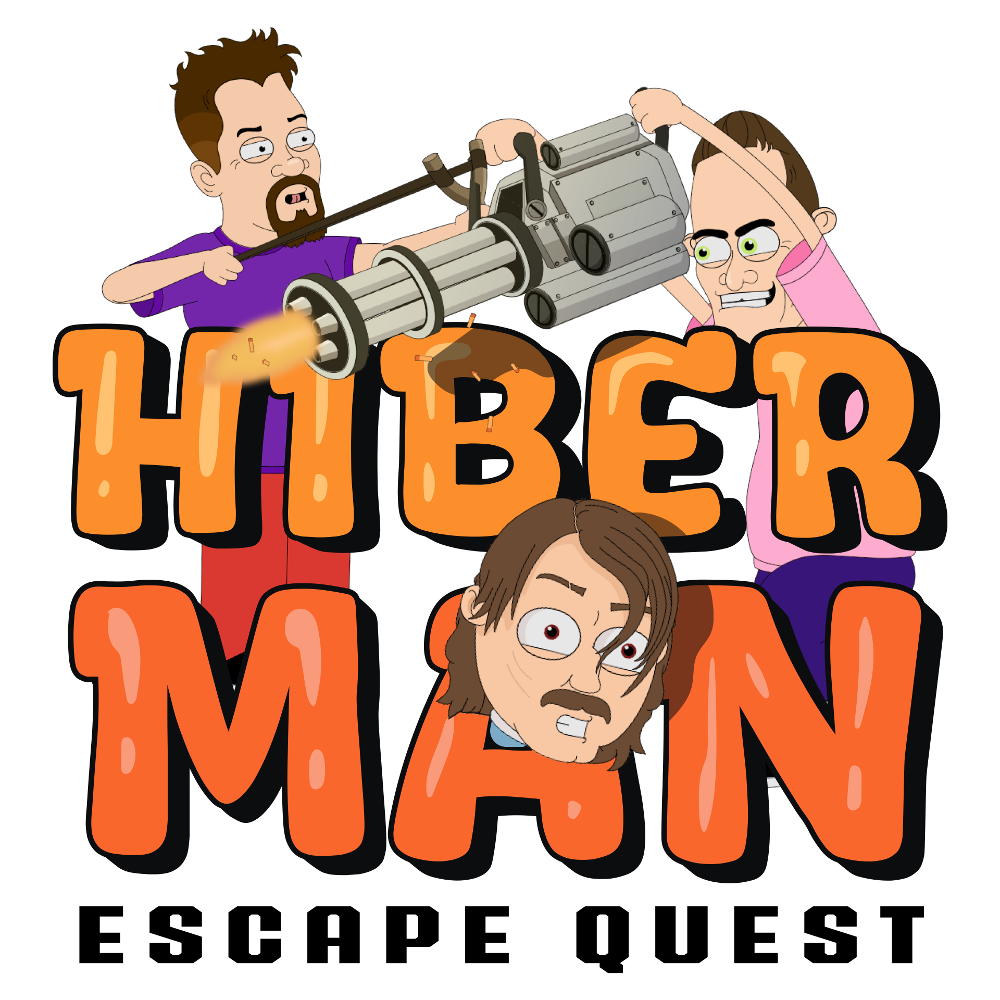
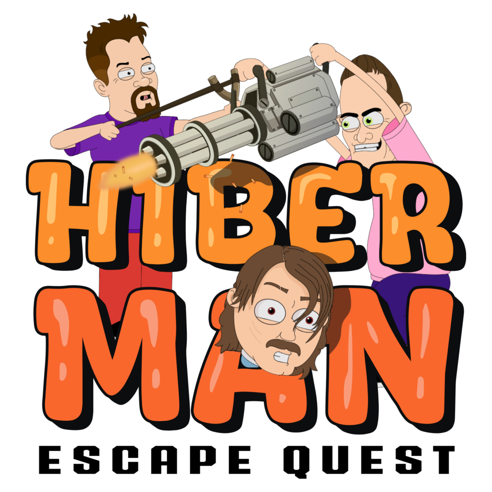

POSTAĆ 01
Dżordż
Przypadkowy podróżnik z przyszłości. Rzucony 100 lat do przodu, staje się osią fabularnego chaosu i motorem całej wyprawy.
Produkcje własne // Styl komiksowy
Szalona kampania akcji oparta na serialowym uniwersum. Dżordż, Jimmy i Kadłubek wpadają w cyfrowy chaos i walczą o ucieczkę z gry pełnej humoru, zwrotów akcji oraz groteskowych przeciwników.

Grafiki źródłowe

Bohaterowie kampanii
POSTAĆ 01
Przypadkowy podróżnik z przyszłości. Rzucony 100 lat do przodu, staje się osią fabularnego chaosu i motorem całej wyprawy.
POSTAĆ 02
Mistrz garażowej wojny i autor eksperymentów, które często wymykają się spod kontroli. Napędza akcję i ton humorystyczny.
POSTAĆ 03
Najbardziej nieprzewidywalny członek ekipy. Dostarcza absurd, timing i punkty zwrotne, które budują komiksowy charakter świata.
Pipeline fabuły
Serialowy lore i humor zostają przełożone na grywalną kampanię.
Animowane sekwencje spinają fabułę i podbijają charakter postaci.
Tempo walki, różnorodne bronie i nagłe zwroty utrzymują rytm rozgrywki.
Finały rozdziałów opierają się na unikalnych sztuczkach i patternach bossów.
Tryby akcji
Od klasycznych broni po kompletnie absurdalne narzędzia. System pozwala łączyć styl walki z osobowością bohatera.
Nietypowi wrogowie z charakterem: od kościotrupów po wirusy i bakterie. Każde starcie ma inny rytm i inny zestaw reakcji.
Pojedynki bossowe jako kulminacja rozdziałów. Każdy boss ma własny zestaw ataków i wymaga innej strategii.
Gameplay reels
Dalej
Możemy przygotować roadmapę rozwoju contentu, rozdziałów i cutscenek pod milestone wydawniczy lub współprodukcję.